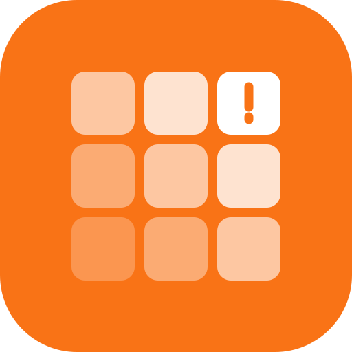

Risikoanalyse Unternehmen
Auswirkungen auf Unternehmen 1 – 5 Jahren
* Diese Matrix ist eine beispielhafte Darstellung*

Arbeitnehmerschutz / Vorschriftenandere Unternehmensrisiken
Auswirkungen auf Unternehmen 1 – 5 Jahren
* Diese Matrix ist eine beispielhafte Darstellung*

Risiko antippen zum Bearbeiten. Mit der Maus ziehen, um es in ein anderes Feld zu verschieben.Gedrückt halten und ziehen zum Verschieben. Im Querformat wird die Matrix größer.